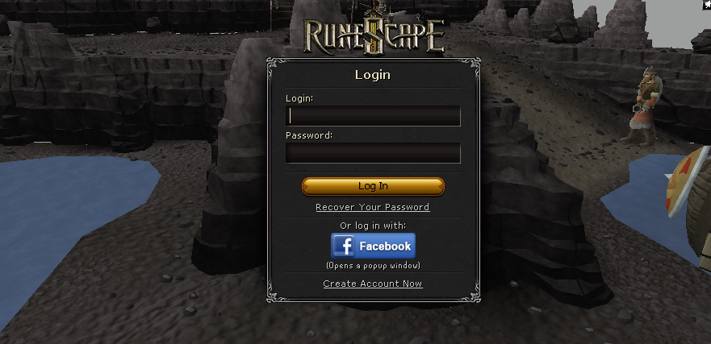
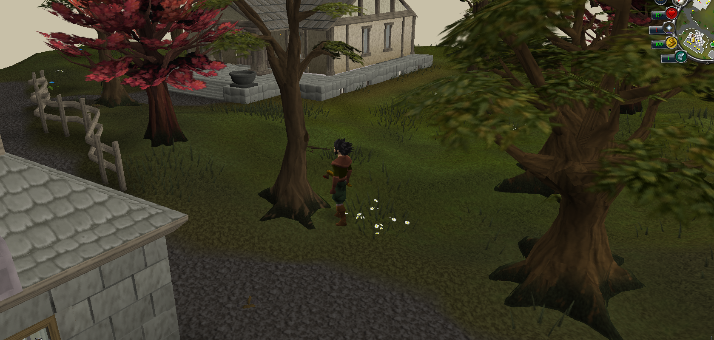
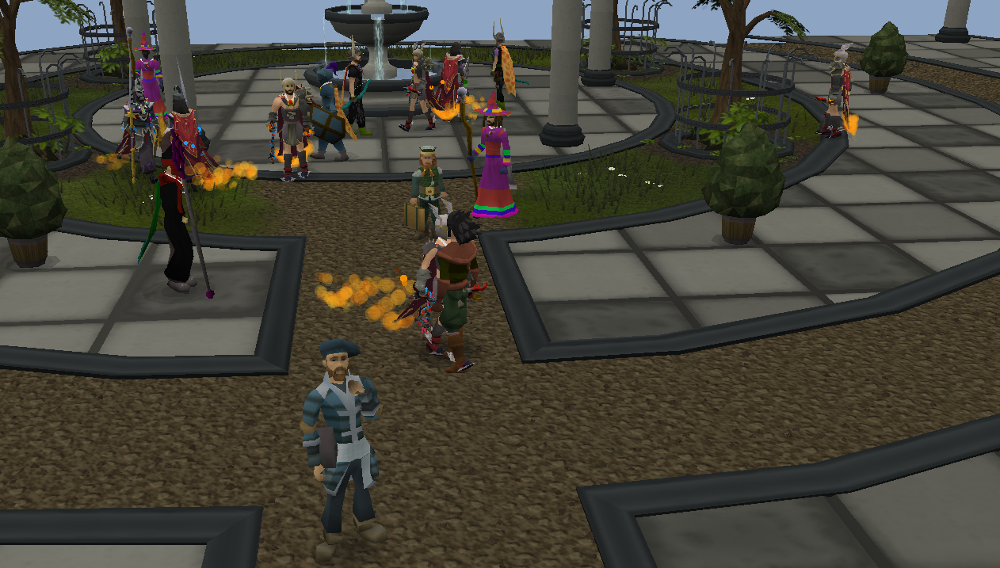

No hosted server. No MongoDB. No lobby service. No internet connection. The Darkan client and the local world engine start together and the client talks only to 127.0.0.1.


286 player bots
88 Wilderness PKers
25 trainable skills
1×–50× XP
0 required services
Features
Core
- Single-process offline design — no external database, hosted server, or internet connection
- The world and its matching client start in one JVM, with the bundled cache and Java runtime
- 286 server-controlled player entities rendered through the real player protocol
- Local Grand Exchange, highscores, and world state — all written under
saves/ - Every lodestone home teleport unlocked, including the quest-gated destinations
- Configurable XP rate — 1× by default, or any multiplier such as 25× or 50×
- Autosaves every 30 seconds, plus a final synchronous save on a normal shutdown
Quality of Life
- Any new username creates a local character — passwords are ignored
- Admin account: log in as
rootfor all owner commands - Back up or move a whole game by copying the
saves/folder - One-command launch on Linux (
./run.sh), Windows (run.bat), and macOS (./run.command) - Trade social bots directly through the Player Marketplace, or use the local Grand Exchange
Player Bots
- Distinct entities — own names, genders, appearances, equipment, skills, and combat levels
- Social players populate towns, Daemonheim, and the Grand Exchange — follow one, inspect its stats, or open a trade
- Full conversations — nearby players answer public chat, respond to private messages from the normal Friends List, and talk with one another
- Optional local AI — connect Ollama for open-ended conversations remembered between restarts; requests stay ordered and scripted replies remain an automatic fallback
- Visible and private — login shows the active chat mode,
::ollamastatusreports its state, and::ollamaforgeterases locally saved conversation memory - Bot clans — create your own clan from the Clan Chat tab, then use a player's Clan options to join their clan or recruit a clanless player into yours
- Wilderness players — the 88 PK bots are the only population bots that can attack or be attacked
- Activity helpers for bosses, Dungeoneering, and Pest Control stay activity-specific: no XP, no drops, no saved accounts
Get started
Linux
- Download the ready-to-run latest release from GitHub, then extract the archive
- Build once from source:
./build-offline.sh(release archives already include the jars) - Play at normal rates:
./run.sh - Play at a boosted rate:
./run.sh 25or./run.sh 50
Windows
- Download the ready-to-run latest release from GitHub, choose the Windows x64 ZIP, then extract it
- Build once from source:
build-offline.bat - Play at normal rates:
run.bat - Play at a boosted rate:
run.bat 25orrun.bat 50
macOS
- Download the ready-to-run latest release from GitHub, choose the macOS x64 ZIP, then extract it
- Play at normal rates:
./run.command - Play at a boosted rate:
./run.command 25or./run.command 50 - Intel Macs run it directly; Apple Silicon Macs require Rosetta 2 for the original 2012 Intel client libraries
Good to know
- Pick any new username at the login screen — that creates the local character. Password text is ignored.
- The Linux, Windows, and macOS release archives ship the cache, prebuilt jars, and a bundled Java runtime.
- Source checkouts omit the proprietary game cache — place a compatible cache in
darkan-cache/. - A fresh source build may fetch dependencies once; a prepared release runs offline from the start.
Screenshots


